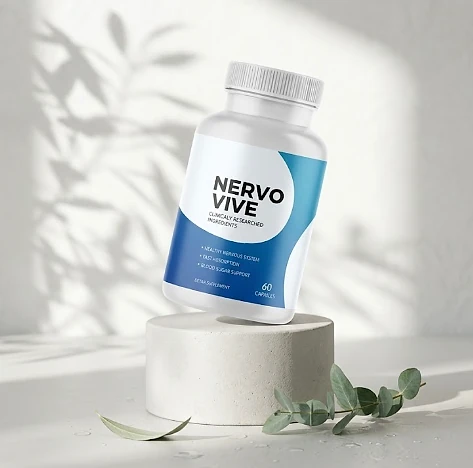
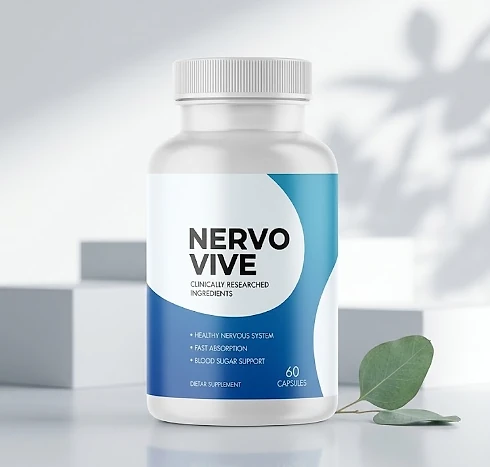
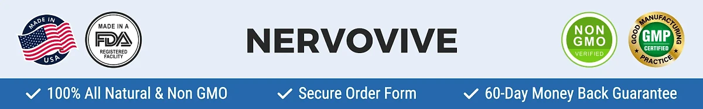

What Is Nervovive And How Does It Work?
Nervovive is a dietary supplement in capsule form designed to support a healthy nervous system, everyday nerve comfort, and balanced blood sugar for adults who want to address the tingling, discomfort, and restless nights that can build up with age and daily stress through a natural, plant-based approach — without complicated routines or temporary quick fixes.
It utilizes a daily serving of two capsules that combines Passion Flower, Marshmallow Root, Corydalis, Prickly Pear, and California Poppy Seed to support calm nerves, comfortable sensation, and healthy sugar metabolism, helping the body maintain its natural balance throughout the day.
According to the official website, Nervovive is a natural formula built around carefully chosen nerve-supporting plants, in an easy-to-swallow capsule designed to release its ingredients quickly. The label sums up its goals in three points: a healthy nervous system, fast absorption, and blood sugar support.
Rather than acting as a short-lived artificial fix, Nervovive focuses on a whole-formula approach, working gradually alongside daily routines to help maintain comfortable nerves and restful nights over time.
With consistent daily use, the formula is intended to support calmer days, more comfortable evenings, and better rest, especially when combined with regular movement, a balanced diet low in refined sugar, and good sleep habits.
From a practical standpoint, Nervovive is a daily nerve support capsule designed to fit into an ordinary routine, with no powders to mix and nothing to measure. The official website describes it as a natural, non-GMO formula with no stimulants.
It is a dietary supplement, not a treatment for neuropathy or any diagnosed nerve condition, and it does not replace the care of a doctor. Anyone who has been diagnosed with a nerve or blood sugar condition should keep following their physician's guidance.
Nervovive Ingredients
Every two-capsule serving of Nervovive contains five plant ingredients, and the Supplement Facts panel discloses the amount of each one. These are the ingredients listed on the label:
Passion Flower Herb Powder (290 mg): A traditional calming herb that helps the body relax and supports restful sleep.
Marshmallow Root Powder (220 mg): A root long used in herbal tradition for its soothing properties.
Corydalis Lutea, 4:1 extract (200 mg): A plant from traditional herbal practice, included to support everyday comfort.
Prickly Pear, 20:1 extract (100 mg): The fruit of the Opuntia cactus, commonly found in blood sugar support formulas.
California Poppy Seed (90 mg): A traditional botanical that supports relaxation and a calm nervous system.
Together, these plants are designed to support nerve comfort, relaxation, and balanced blood sugar from within. The other ingredients are magnesium stearate, gelatin (the capsule), and rice flour, so the capsule is not suitable for vegetarian or vegan diets.
Nervovive is designed for daily use, offering a natural, non-prescription approach to supporting nerve health, without complicated routines or harsh synthetic compounds.
Nervovive Side Effects
Nervovive is generally considered well tolerated and is designed for adults who are looking for a natural, plant-based approach to nerve comfort, especially those who prefer an easy daily capsule routine to support relaxation and restful nights without resorting to harsh solutions.
According to the official website, the formula is non-GMO, free of stimulants, and not habit-forming, and it is made in an FDA-registered facility. The label lists every ingredient with its amount, reinforcing transparency and consistency.
With no widespread reports of serious side effects, Nervovive is generally considered a well-tolerated option. Still, Passion Flower, Corydalis, and California Poppy are calming herbs that may cause drowsiness, so it is best not to combine it with alcohol, sedatives, or sleep medication, and to see how you feel before driving. Prickly Pear may lower blood sugar, so anyone taking medication for blood sugar should talk to their doctor first. It is not intended to diagnose, treat, cure, or prevent any disease, and individual results may vary.
According to the label, it is not for use by anyone under the age of 18 or by pregnant or nursing mothers, and anyone taking medication or with a medical condition should consult a physician before using Nervovive. The label also says not to exceed the recommended dose.
Nervovive Dosage
The recommended Nervovive dosage is two capsules a day, as printed on the label, and the official FAQ adds that they should be taken with plenty of water. It is designed to fit easily into a daily routine, making consistency simple and convenient, with no powders to mix and nothing to measure.
The label does not specify a time of day. Because several of its herbs are traditionally used for relaxation, many people prefer to take Nervovive in the evening, at the same time each day, which also makes the routine easy to remember.
For best results, consistency is key. Each bottle contains 60 capsules, a 30-day supply of 30 servings, and the official refund page advises using the product for at least three months before reaching a conclusion, since plant-based support builds gradually.
There is no need for complex schedules or multi-step routines. Two capsules a day are designed to build lasting support gradually alongside regular movement, a balanced diet, and good sleep. The label also advises storing the bottle in a cool, dry place below 30°C (86°F) and not using it if the safety seal is damaged or missing.
As with any dietary supplement, it's important not to exceed the recommended dose and to check the label on your bottle. Nervovive works best when used regularly, combined with healthy daily habits and the guidance of your healthcare professional.
Nervovive – Refund Policy
You can order Nervovive with confidence, knowing that every purchase is protected by a 60-day, 100% money-back guarantee. According to the refund policy, the 60 days start from the day your package is delivered, which allows you to try the formula and decide if it delivers the support you expect.
The policy asks customers to give the product enough time first, ideally about three months, and explains the steps: confirm you are still within 60 days of delivery, email support with "Refund Request" in the subject line, and send all the bottles back, opened or not, with a note containing your full name, email, and order number. Return shipping is paid by the customer.
How the refund process works: Ship all the bottles and the packing slip to 19655 E 35th Dr #100, Aurora, CO 80011, USA. Once the package arrives, the refund is processed within a few days, and you receive an email confirming it.
Customer Support Contact Information: contact@nervovive-product.com, the email listed on the official website and on the product label. Order questions can also go to BuyGoods, the retailer, through its order support page.
Refund Processing Time: According to the policy, the refund is processed a few days after the return is received; it may then take some time to appear on your statement, depending on your bank.
This refund policy is designed to give customers a clear and transparent experience when trying Nervovive, with the return address and every step published on the official website.
Nervovive – Where To Buy
Nervovive is sold through its official website, so if you decide to try it, it's important to be careful about where you purchase it. The official website is the only sales channel the manufacturer lists, and it does not point to marketplaces such as Amazon, eBay, or Walmart.
Listings on third-party platforms may look similar but cannot be verified as authentic, raising concerns about safety, quality, and ingredient freshness. Products purchased outside the official source may not be covered by the 60-day guarantee.
For this reason, it makes sense to purchase Nervovive only through the official website. Buying directly from the official source ensures you receive the authentic original product, with access to customer support and the full guarantee. According to the official FAQ, every purchase is a one-time payment, with no auto-ship, recurring charges, or hidden fees.
To avoid counterfeit batches and ensure maximum quality, always verify that you are ordering from the official Nervovive website before completing your purchase.
To ensure you’re getting the authentic product, most users choose to visit the official website.
Is Nervovive A Scam?
Based on what the official website and the product label disclose, Nervovive does not appear to be a scam. It is a real capsule supplement, sold through an established retailer (BuyGoods), and formulated to support a healthy nervous system and everyday nerve comfort as part of a consistent routine.
The ingredients used in Nervovive — Passion Flower, Marshmallow Root, Corydalis, Prickly Pear, and California Poppy Seed — are traditional botanicals, and the label discloses the amount of each one, which is more transparent than a proprietary blend.
The label also identifies the distributor, with an address in Aurora, Colorado, and a support email, and the official website states that every order is a one-off purchase with no hidden autoship. One point of caution: the sales presentation uses strong language about neuropathy that goes beyond what a supplement can promise, so it is best to focus on the label and the guarantee.
The testimonials on the official website talk about a "method" from the sales video and mention diagnoses and surgery, so this review does not quote them. The formula offers daily botanical support for nerve comfort and relaxation. Results vary from person to person, and no supplement replaces medical care or prescribed treatment.
Nervovive is backed by a 60-day money-back guarantee counted from delivery, and the refund steps and return address are published on the official website, which underscores the company's transparency with customers.
If you're looking for a simple daily capsule to support nerve comfort and restful nights without complicated routines, Nervovive is worth considering — especially when purchased directly from the official website.
For those who want to verify product details or check current availability, the official Nervovive website remains the safest option.

Check Availability On Official Website
